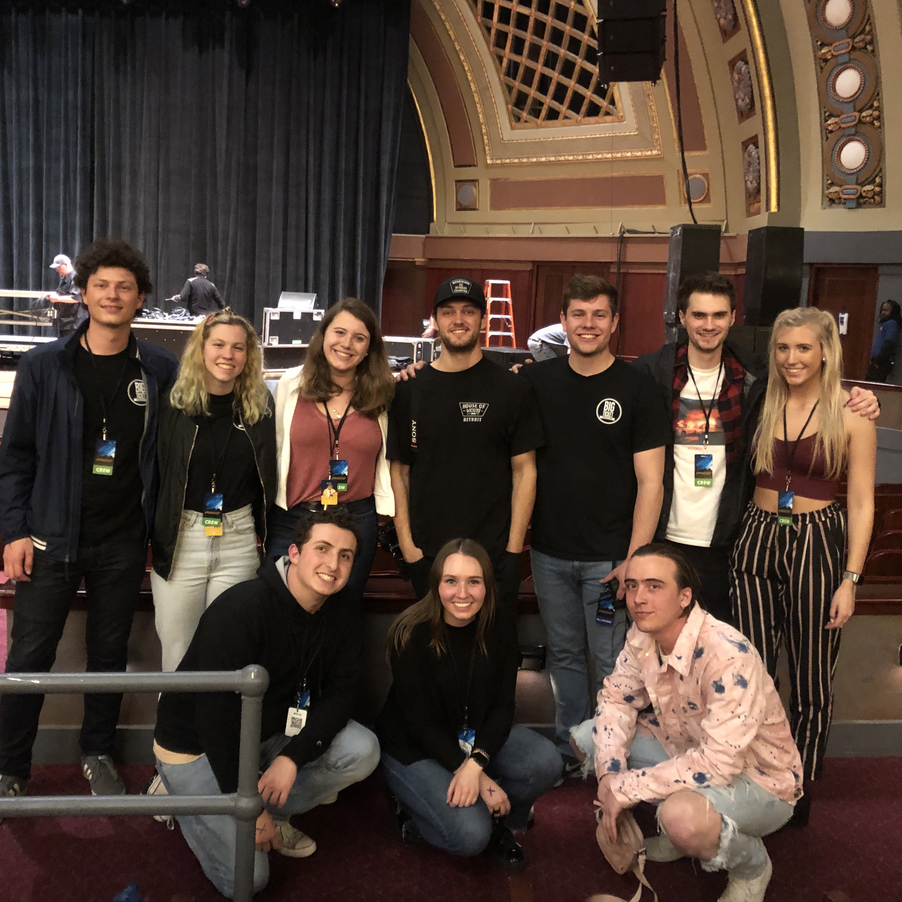
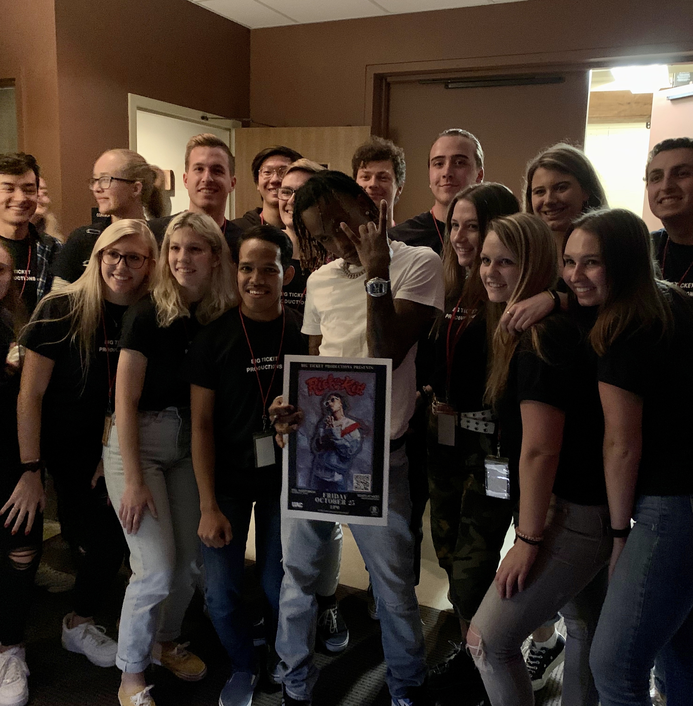
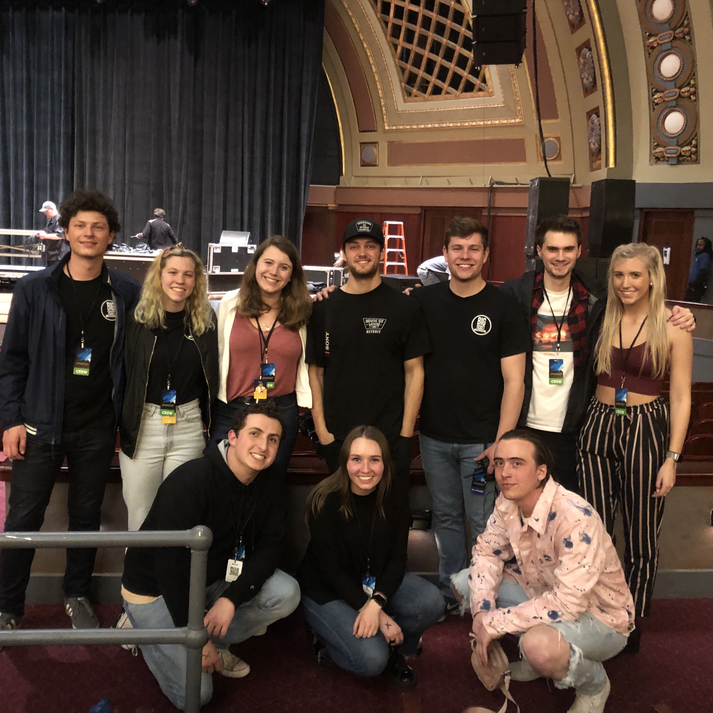
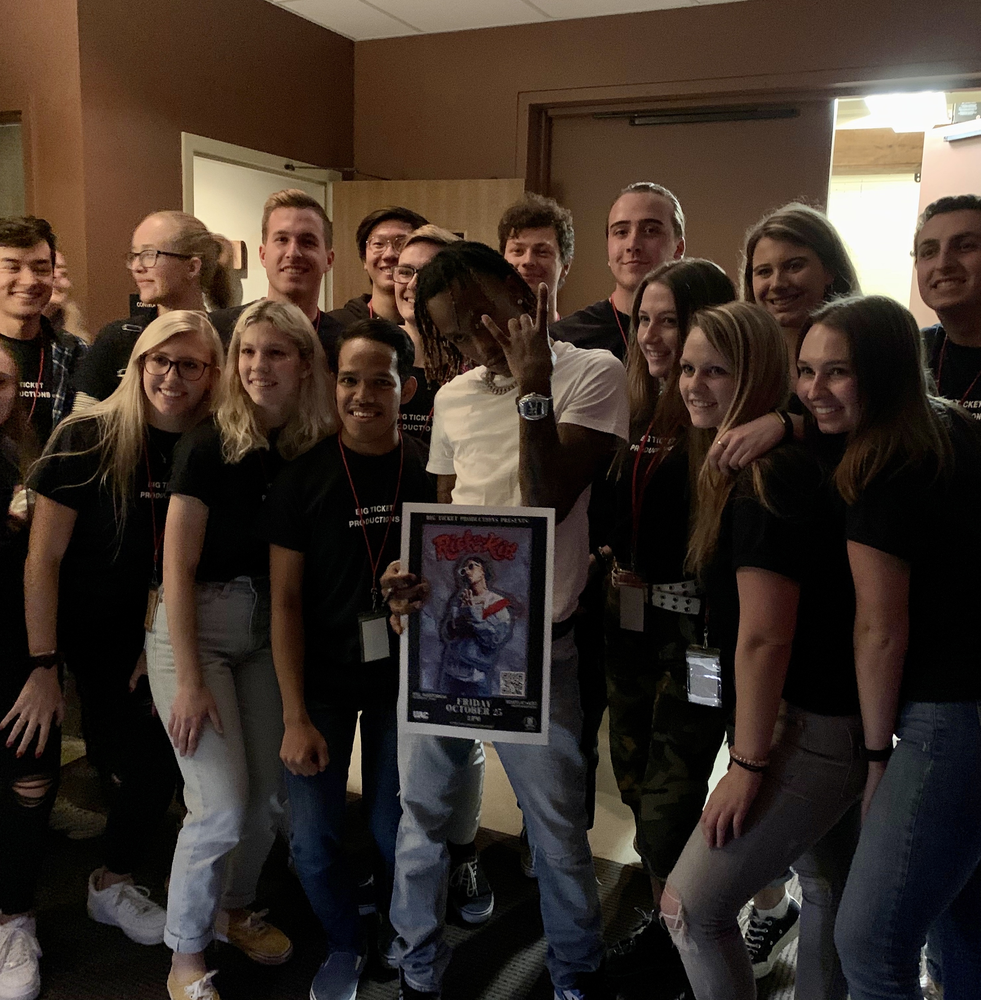
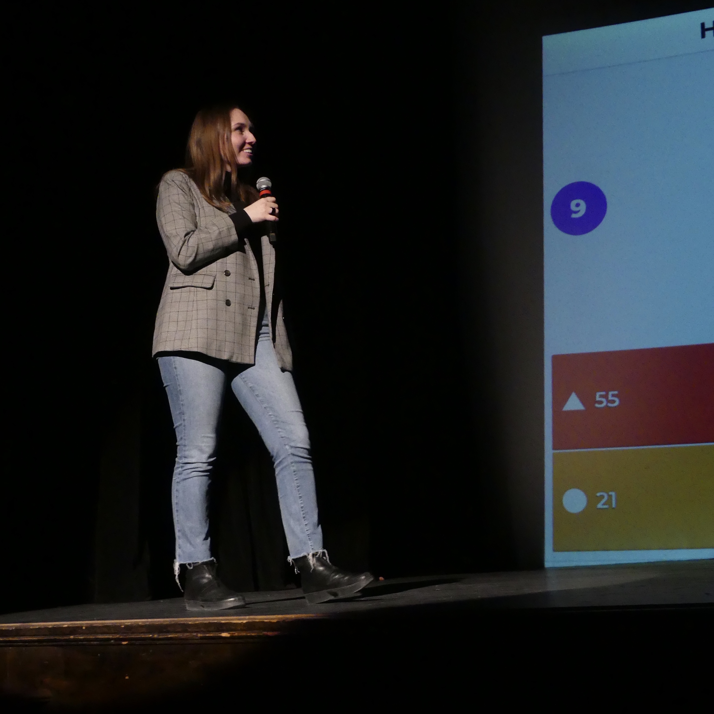

Production Experience
Big Ticket Productions
 



Over the past 3 years, I’ve had the opportunity to work with Big Ticket Productions to bring 4 large-scale concerts to Hill Auditorium, including Blackbear & Roy Woods, Arizona/Electric Guest & Mikky Ekko, A$AP Ferg, and Rich the Kid. Throughout these years I’ve been in several different roles, jumping in to any opportunity to help make the show a success.
While every show has come with challenges, each one is a truly amazing experience. There's nothing I love more than bringing my love of live music to my peers at Michigan.
University Activities Center
Over the past year I've had the chance to be on the University Activities Center, or UAC, E-board as the Director of External Relations. As the External Director, I produced the UAC Showcase, a dynamic event with 16 different student organizations performing.